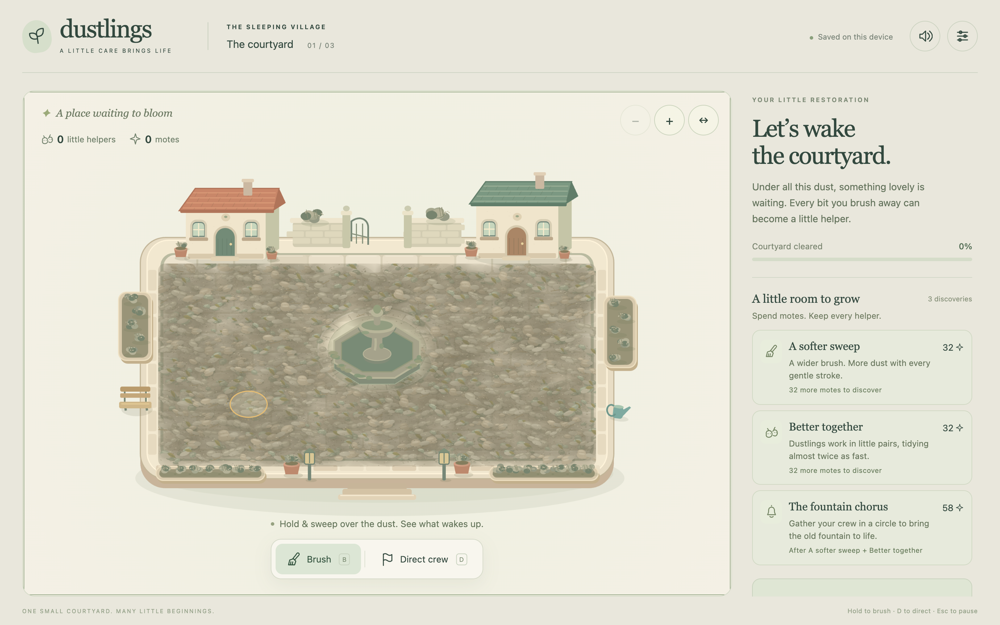
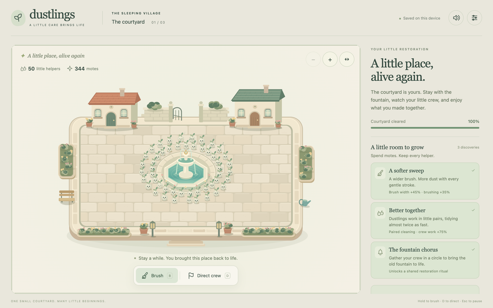
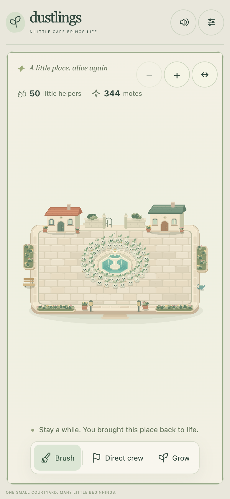
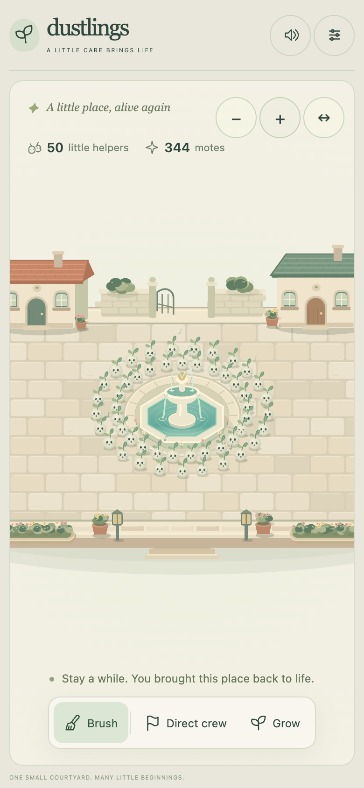

DUSTLINGS · COURTYARD CHECKPOINT 0.1A little care brings life.
One forgotten courtyard, dust that becomes a living workforce, three discoveries, and a fountain brought back to life. This is an integrated playable prototype for review. Human acceptance is still pending.
Play the offline courtyard ↗Private playtest protocol
No human playtests have taken place. All observations below are automated checks or assistant capture review. The 12–20-player round, uncoached upgrade success, voluntary continuation, aesthetic preference and physical-device comfort remain unmeasured.
What restoration reveals

Actual final-build opening, 1440 × 900 viewport, DPR 2.
Actual final-build rendering from an automated completed save, same framing. This is a controlled fixture, not a human playthrough.Watch the interactions
45-second normal-speed browser input recording: brush → helpers → first upgrade → crew direction. Full interface; this version is silent. No state shortcuts during the opening.The same opening canvas with its actual live game audio. The DOM interface is outside this canvas recording. Brushing produced the first helper at 8.78 seconds and four helpers by 39.11 seconds in this scripted input run.
Normal-speed fountain chorus, transformation and completion with live game audio. Starts from an automated save in which cleaning is finished but the fountain has not been restored. The bell is activated through the actual interface.
Checks and their limits
| Check | Observed result | What it does not establish |
|---|
| Simulation and saves | 17 tests pass: dust/currency, helper formation, upgrade behavior, obstacle routes, live chorus recovery, final specks, damaged save and storage failure. | Player understanding, satisfaction or comfort. |
| Browser interaction | 26 checks pass, zero console errors. Touch offset, preview, cancel, pause, reload, settings, zoom, pan, drawer and layout checked. | Physical iPhone/iPad touch, Safari or Windows compatibility. |
| 50-helper performance | 60-second profile: mean 16.72 ms, p95 16.8 ms, p99 16.8 ms. One 216.6 ms worst interval; zero ≥500 ms. MacBook Pro M4 Pro / 48 GB, macOS 26.6.2, headless Chrome 152, 1440 × 900, DPR 2, audio on. | Manual on-screen feel, weaker hardware, thermal stability or mobile release readiness. Profile precedes the final caption and 44 px control-only corrections. |
| Final offline artifact | Exact-build smoke report: starts without network requests, saves/returns, correct completed caption, primary controls ≥44 px across captured layouts. | A packaged native Windows/Mac/iOS release. |
| Audio | Offline render: no invalid/clipped samples, −15.29 dBFS peak, rate-limited births and mute silence. | Human listening, pleasing balance or fatigue over a long session. |
Pacing is a hypothesis
Automated runs bought upgrades immediately and selected dust targets every three simulation seconds. Continuous brushing finished in 5:06; 40% brushing duty finished in 8:44; 15% duty finished in 14:05. The sparse-brushing run took 50.8 seconds to form its first helper. These results flag variation to investigate; they do not validate the 30-second opening or 10–15-minute restoration for unfamiliar people. Full conditions and timings.
Device and interface previews

390 × 844 viewport simulation. Whole-village fit makes creatures and brush small; physical comfort remains unresolved.
One tap on + gives 1.7× framing. Pan to reach edges. Finger-offset input is tested by automation only.Tablet viewport · 1280 × 800 desktop · Phone landscape · Phone journal · Completion flow
Inspectable art direction
Warm cream
Sage
Terracotta
Restored water
Ink green
Original canvas art uses large stone seams, rounded plaster houses, clay pots, a leaf-topped creature and a central water reveal. Typography pairs a quiet serif with a system sans. Figma was unavailable: the running game's onboarding, upgrades, pause/settings, recovery and progress flows are the inspectable prototype. Reference study, UI source map, scale targets and remaining defects.
Reading text still falls below the proposed 16/14 px hierarchy in some places. Phone scale, upgrade effect recognition, tired hands, cue balance and emotional payoff need focused human review before more content.
Hear the original motif
36-second synthetic audition from the same sound engine. Starts sparse, grows with restoration and includes brush, birth, direction, upgrade and completion cues. Technical rendering was inspected; no human listening result is claimed.
Next concrete task: observe 12–20 unfamiliar intended players using this build. Separate incremental buyers from cozy/cleanup players and friends/developers. Record exact uncoached upgrade and voluntary-continuation counts, reasons and disagreements. Test the strongest evidenced problem next. Do not add the canal or clocktower garden yet.
Resumable development checkpoint · Run and build instructions · Build manifest